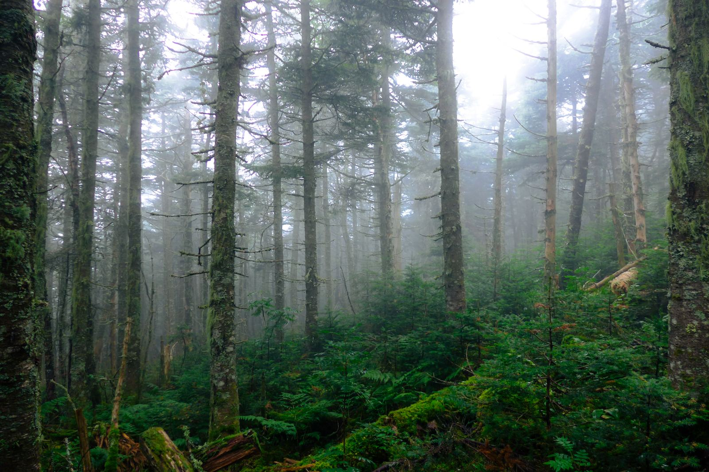
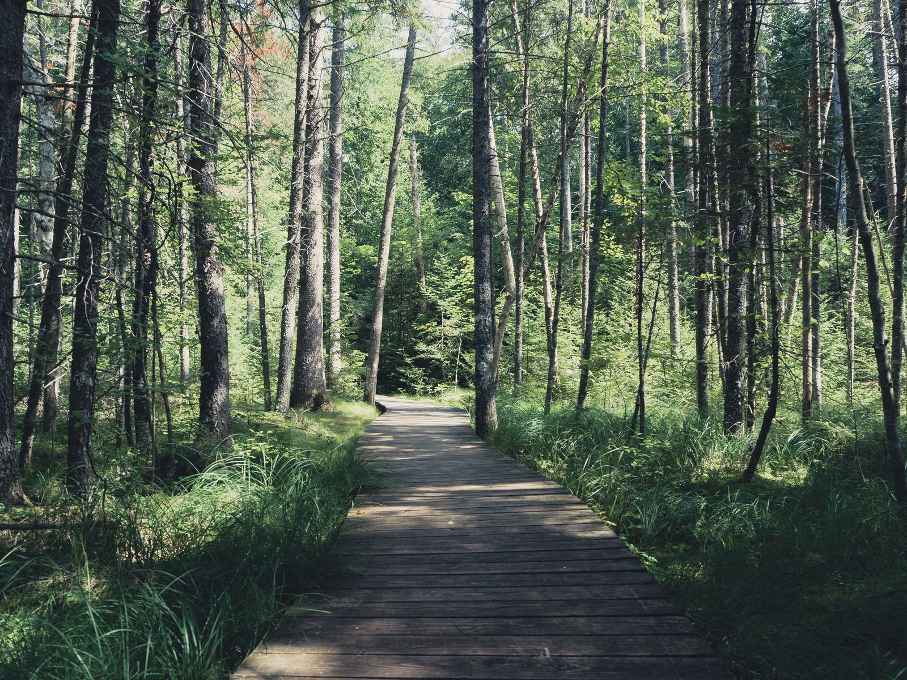

Waypoint Studio
Independent software, tools & experiments.
Ideas explored through software—some useful, some creative, some simply worth building.
Studio // Positioning
Studio positioning
I had an idea, so I built it.
Project // Gallery
Work from the studio
Each project stands on its own. Status is metadata — not a sales pitch. Available routes stay available; experiments stay reachable without pretending they are products.

Dashboard
Outdoor conditions and attention tools — weather, light, and what is worth noticing, labeled honestly.
Open →
Shed Hunting
Should I go shed hunting today? Field map and search guidance on ShedHunting.org — powered by Waypoint.
Open →Waypoint Deck
A local-first Linux field computer for offline maps, navigation, and field tools. Early-stage — direction is public.
Read →
TerrainBound
An exploration game about learning to read the Earth — walk the land, ask questions, keep a field tablet.
Play →
Articles
Field reading and visual stories from Waypoint Publishing — including Deep Forest Dispatch.
Read →
Scenes
Photography tools and Living Scenes experiments — craft, review, and visual storytelling tech. Not a commercial product line.
Explore →Global Watch
Standalone open-source intelligence field test — change detection and evidence correlation. Not a Studio platform product.
Launch →About // The Workshop
How this studio works
Waypoint Studio is a place for making things. Some projects become useful tools or finished products. Others remain experiments, prototypes, or personal projects. Each is free to become whatever the idea calls for.
Navigate // Studio